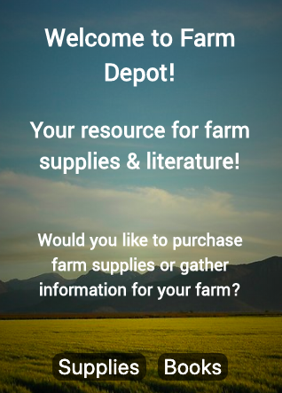
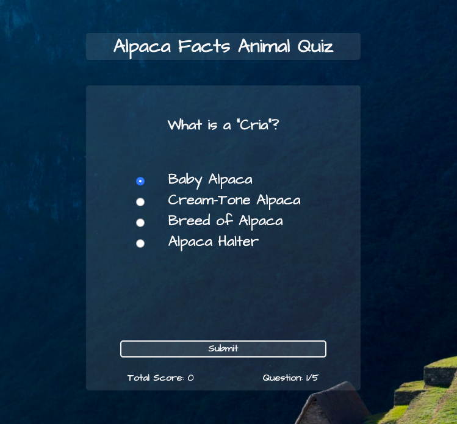

Hi, I'm Kate
I love taking on challenges - learning to code has been exciting!
About Me
I’m a Web Developer with a knack for problem-solving. I am enrolled in Bloc’s 8-month Web Development Track online. My proudest achievements are ones that require strategy, attention to detail, and persistence. I have a
passion for collaboration and strive to go above and beyond on projects I have worked on. I make it a priority to learn and advance my skills continuously.
Programming languages aside, I am passionate about studying spoken languages that will lead me on new adventures. I graduated from Concordia College with a major in Political Science and minors in Spanish and Psychology (Go
Cobbers!). When I’m offline, I enjoy reading, hanging out on my family’s hobby farm, and speaking at local Toastmasters meetings. My favorite time of year is fall because of warm blankets, IPAs, and scary movies.
Currently Studying: React, Node.js, Postgres and JWT Authentication.
Portfolio
API Capstone - Farm Depot
Technologies Used: HTML, CSS, JavaScript, jQuery
A resource for farm owners to find supplies and learning resources through use of the eBay find API and Goodreads API.
Animal Fact Alpaca Quiz
Technologies Used: HTML, CSS, JavaScript, jQuery
This goal of this project was to build and deploy a well-architected, dynamic, accessible client-side app. I wrote JavaScript code to evaluate answers and lead users through each page of the app and created
additional CSS to style the application.
Contact Me
Kate EngstromWeb Developer
Minneapolis, MN
katemacnd@gmail.com
(612) 559-1197